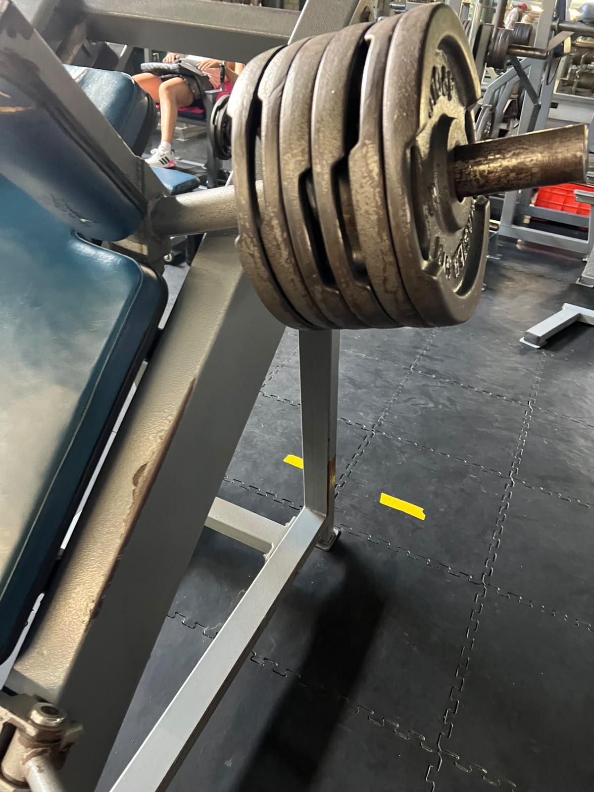
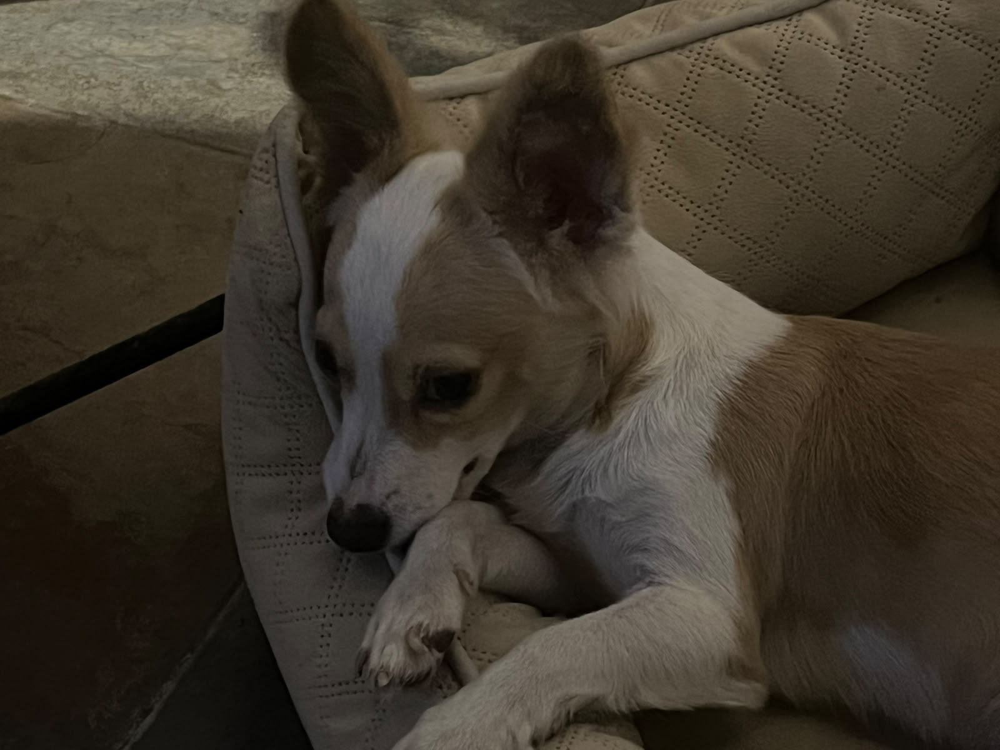

Mis Datos
Nombre: Issac Sánchez Julián
No. Control: 24090974
Escuela: Instituto Tecnológico de Zacatepec
Fecha de nacimiento: 17 de Noviembre 2006
Acerca de mí
Soy una persona con intereses muy variados. Me apasiona mucho la programación y mi carrera; me esfuerzo al máximo por entender cómo funciona todo desde adentro, y aunque a veces los temas pueden ser complejos o yo los entienda poco, la satisfacción de lograr que el código funcione lo vale totalmente.
Fuera de lo académico, me encanta construir cosas (como sets de LEGO) y coleccionar figuras o artículos variados. Disfruto mucho de la música; mis gustos son muy amplios y el género que escucho depende casi por completo de mi estado de ánimo, aunque tengo cantantes favoritos como Lana del Rey y Alejandro Sanz, también grupos como Imagine Dragons o Caifanes. Además, últimamente dedico bastante tiempo a tocar la guitarra, lo cual me ayuda a relajarme y desconectar de las pantallas. POr último o hay nada que me guste más que amar a mis seres queridos.
Mis Pasatiempos
Me apasionan demasiado los videojuegos, más los de mundo abierto porque es como descubrir un nuevo mundo. Me encanta cuidar mi salud física y aumentar mi fuerza, por eso voy siempre al gimansio. Adoro con toda mi alma a los animales, más a los perros pero sin duda cualquier anmial que entra en mi vida siempre se hace un espacio en mi corazón, mis dos compañeros más fieles fueron Lucky y Berlín, por eso los llevo en mi corazón hoy y para siempre.
Gaming
Gimnasio



Mascotas


Expectativas de la Materia
Aprender a diseñar páginas web bien estructuradas y con mi propio estilo, además, entender cómo combinar HTML con CSS y como darle vida a mis páginas con JS. Realmente espero poder crear mis propios mundos pequeños para que otra gente los aprecie.